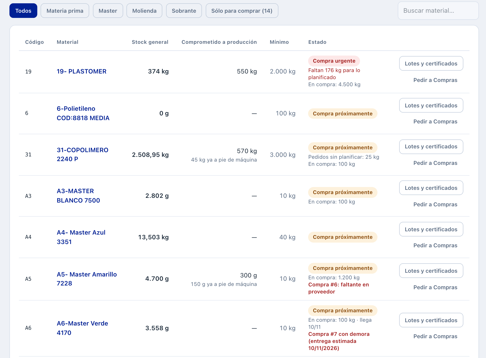
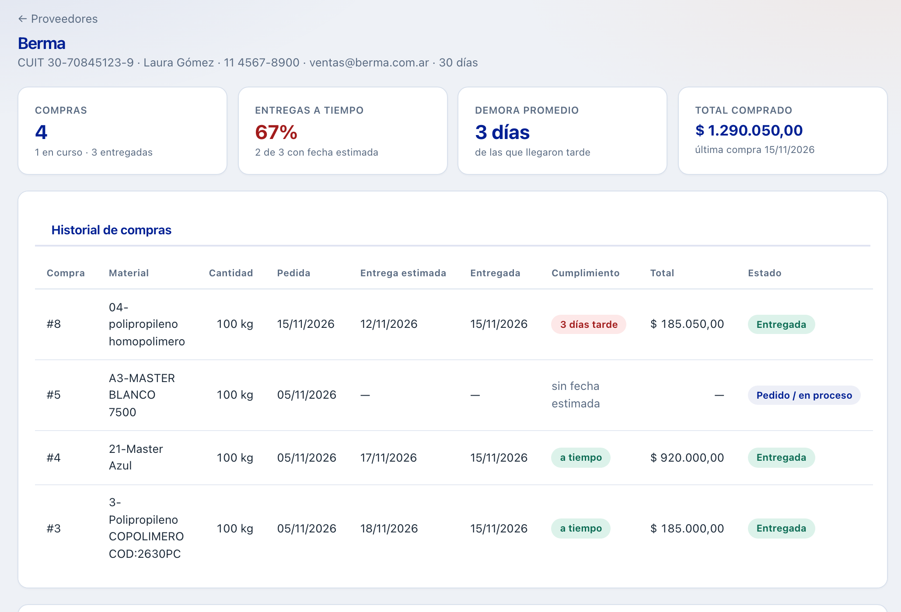
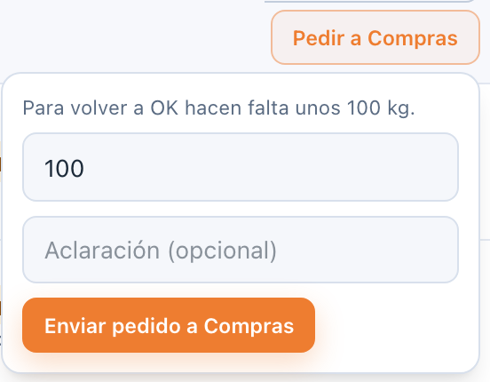
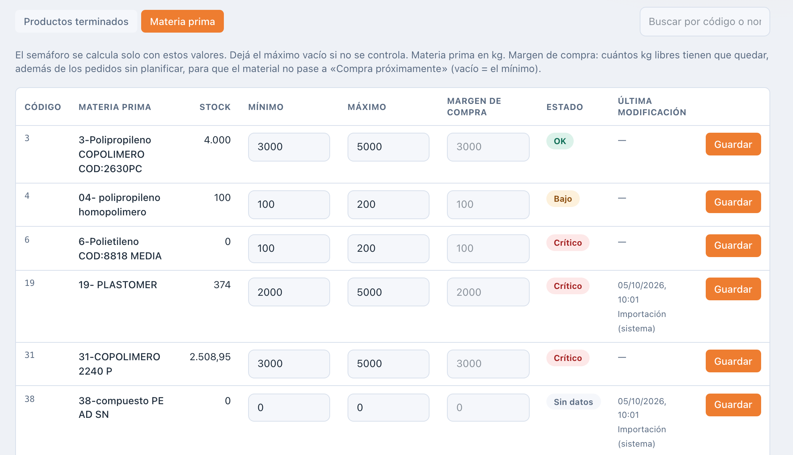
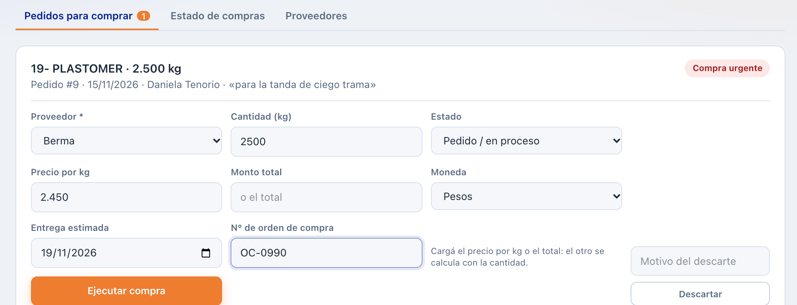
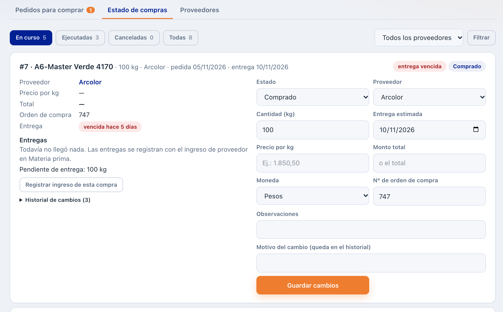
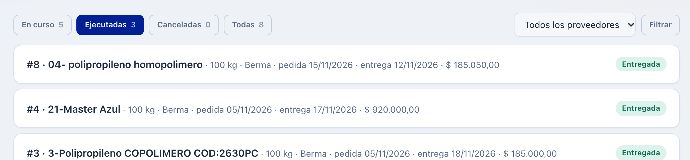
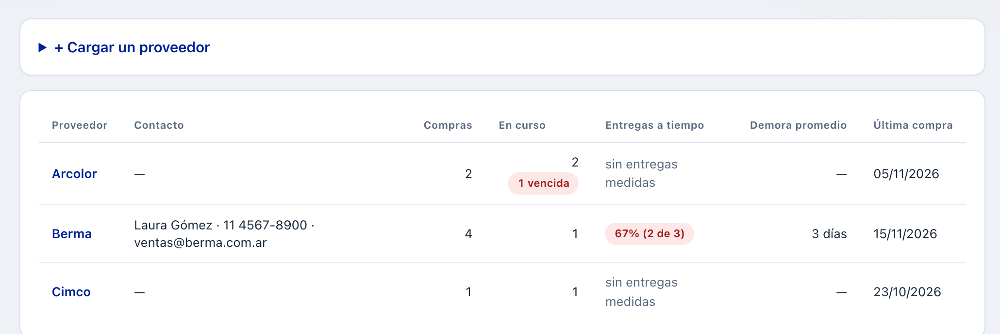

Materia prima decide qué comprar mirando su stock. Compras ejecuta cada pedido con su proveedor y sus montos, y sigue la entrega hasta el depósito.
Materia prima → Stock general

Compras → Proveedores → Berma

2áreas que cambian
3estados de compra
7preguntas abiertas
NEXA Soluciones · Pisos encastrablesDocumento para revisión con la empresa
NEXA · Compras y materia prima
Resumen
Quién hace qué
Compras ya no decide qué comprar: ejecuta lo que le pide Materia prima. La necesidad de material pasó a la tabla de stock de Materia prima.
Materia prima decide
Ve en su tabla de stock lo comprometido a producción y el estado de cada material: Compra urgente, Compra próximamente u OK.
Pide a Compras desde la misma fila, con la cantidad sugerida.
Recibe la mercadería con el ingreso de proveedor, imputado a la compra.
Compras ejecuta
Recibe los pedidos de Materia prima, el más urgente primero.
Ejecuta cada uno eligiendo el proveedor y cargando precio, total y moneda, orden de compra y entrega estimada.
Sigue el estado de cada compra y el cumplimiento de cada proveedor.
El recorrido de una compra
Materia prima
Ve un material en Compra urgente o próximamente.
→
Pedido
«Pedir a Compras» con la cantidad sugerida. Compras recibe el aviso.
→
Compras
Ejecuta con proveedor, montos, OC y entrega estimada.
→
Ingreso
Materia prima registra el ingreso imputado: la compra pasa a entregada.
→
Proveedor
La entrega suma al historial y al cumplimiento de fechas.
Qué se sacó
Necesidad en Compras
La pestaña de necesidad de materia prima pasó a la tabla de stock de Materia prima.
Compras sueltas
Compras ya no registra compras por su cuenta: todas nacen de un pedido de Materia prima.
Dos solapas iguales
«Compras en curso» y «Todas las compras» quedaron en una sola: Estado de compras, con filtro.
2
NEXA · Compras y materia prima
01 · Materia prima
01
Materia prima: qué hay que comprar
La tabla de stock general muestra, para cada material, lo que ya está comprometido a producción y si hay que comprar. Primero lo urgente, después lo próximo y al final lo que está bien.
Materia prima → Stock general
12345
1
Sólo para comprarFiltra los materiales en urgente o próximamente.
2
Comprometido a producciónLo que todavía necesitan las tandas planificadas y en curso. Se cubre primero con lo que ya está a pie de máquina.
3
Compra urgenteCon cuánto falta para lo planificado y lo que ya está en compra.
4
Compra próximamenteCon los pedidos todavía sin planificar que piden ese material.
5
Problemas con la compraFaltante en proveedor o demora, con el número de compra.
3
NEXA · Compras y materia prima
01 · Materia prima
Cómo se decide el estado
Compra urgente
El stock general no alcanza para lo que falta llevar a las tandas planificadas y en curso.
Stock general < comprometido − pie de máquina
Compra próximamente
Alcanza para lo planificado, pero lo que queda no cubre los próximos pedidos más el margen del material.
Libre < pedidos sin planificar + margen
OK
Alcanza para lo planificado y para los pedidos que vienen, con el margen cubierto.
Todo lo demás
Pedir a Compras, con la cantidad sugerida
Desde la misma fila, «Pedir a Compras» abre el pedido con los kg que hacen falta para volver a OK, descontando lo que ya está pedido o en compra.
Si ya hay suficiente en camino, lo avisa en vez de sugerir otra compra.
Se puede cambiar la cantidad y agregar una aclaración. Compras recibe el aviso.

Margen de compra por material panel admin
Configuración → Mínimos y máximos → Materia prima. Cuántos kg libres tienen que quedar, además de los pedidos sin planificar, para que el material no pase a «Compra próximamente». Si se deja vacío, se usa el mínimo.
Configuración → Mínimos y máximos → Materia prima

1
4
NEXA · Compras y materia prima
02 · Compras
02
Compras: ejecutar y seguir
Tres pestañas: Pedidos para comprar, Estado de compras y Proveedores.
Pedidos para comprar
Compras → Pedidos para comprar

1234
1
UrgenciaEl estado del material en Materia prima: los urgentes aparecen primero.
2
ProveedorObligatorio, elegido de la ficha de proveedores.
3
MontosPrecio por kg o total (el otro se calcula con la cantidad), en pesos o dólares.
4
Ejecutar compraQueda como pedido o comprado, con OC y entrega estimada. También se puede descartar con motivo.
5
NEXA · Compras y materia prima
02 · Compras
Estado de compras una sola lista
Reemplaza a «Compras en curso» y «Todas las compras». Se filtra por estado y por proveedor; cada compra muestra proveedor, montos, entregas y su historial, y se corrige con motivo.
Compras → Estado de compras → En curso

1234
1
En curso · Ejecutadas · Canceladas · TodasCon la cantidad de cada una.
2
Por proveedorPara ver todo lo de un proveedor.
3
EntregaA tiempo, días tarde o vencida y todavía sin llegar.
4
Montos editablesSi cambia el precio o aparece un flete, queda en el historial.
Compras → Estado de compras → Ejecutadas

Las ejecutadas: compras entregadas, con proveedor, fechas y total.
6
NEXA · Compras y materia prima
02 · Compras
Proveedores nuevo
Ficha de cada proveedor (CUIT, contacto, teléfono, email, dirección, condición de pago) con su historial de compras y el cumplimiento de las fechas de entrega.
Compras → Proveedores

123
Compras → Proveedores → Berma
345
1
Cargar un proveedorY editar su ficha o darlo de baja.
2
VencidasCompras en curso con la fecha pasada.
3
Entregas a tiempoÚltima entrega contra la fecha estimada.
4
Demora promedioDe las que llegaron tarde.
5
Por compraA tiempo o cuántos días tarde.
7
NEXA · Compras y materia prima
03 · Preguntas pendientes
03
Preguntas pendientes
Mientras no se respondan, el sistema funciona como dice «Hoy».
1
«Compra urgente cuando ya no alcanza para la producción en marcha»: ¿cuenta lo planificado o sólo lo que se está produciendo?
HoyCuentan las tandas planificadas y las que están en curso.
Planificadas y en cursoSólo en curso
2
«Compra próximamente»: ¿cuenta también reponer el stock mínimo de pisos terminados?
HoyPedidos sin planificar + margen del material (vacío = su mínimo).
Así está bienSumar stock mínimo de pisos
3
Compras ya no puede registrar una compra sin pedido de Materia prima. ¿Hace falta para alguna urgencia?
HoyToda compra nace de un pedido de Materia prima.
Así está bienPermitir compras sueltas
4
Montos: ¿se cargan con o sin IVA? ¿Alcanzan pesos y dólares?
HoyPrecio por kg y total, sin aclarar IVA; pesos o dólares.
Con IVASin IVA
5
Cumplimiento: si Compras corrige la entrega estimada, ¿se mide contra la nueva fecha o contra la primera que dio el proveedor?
HoyContra la fecha vigente (la última cargada).
La vigenteLa primera
6
Un material ya pedido sigue en «Compra próximamente» hasta que llega. ¿Prefieren un estado aparte, «En compra»?
HoySigue en su estado, con «En compra: X kg» y la fecha de llegada.
Así está bienEstado «En compra»
7
En el ingreso de materia prima, ¿el proveedor también se elige de la ficha?
HoySe escribe a mano en el ingreso.
Elegirlo de la fichaDejarlo así
Ya está en el sistema.
Con estas respuestas se ajustan los estados de compra y la ficha de proveedores.